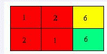

Jiajia，Wind和一群朋友去郊外植树。他们认为树和人一样，都应该是一对一对的。因此他们想种偶数棵树，并且这偶数棵树排列成2*n的形状。现在Jiajia已经选定了种树的位置，并且根据土壤的硬度给每个位置打了一个难度分。Wind决定把种树的工作分成若干部分，每个人负责一部分。每一部分工作都要种一个矩形内的树木，难度就是种这些树木的难度分之和。Jiajia一行共有m个人，他希望工作能尽量分的均匀，也就是希望分配给每个人的工作中难度最大的最小。
下图即为样例，不同的颜色代表不同部分的植树工作。
